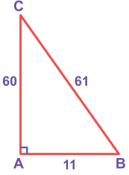
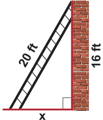
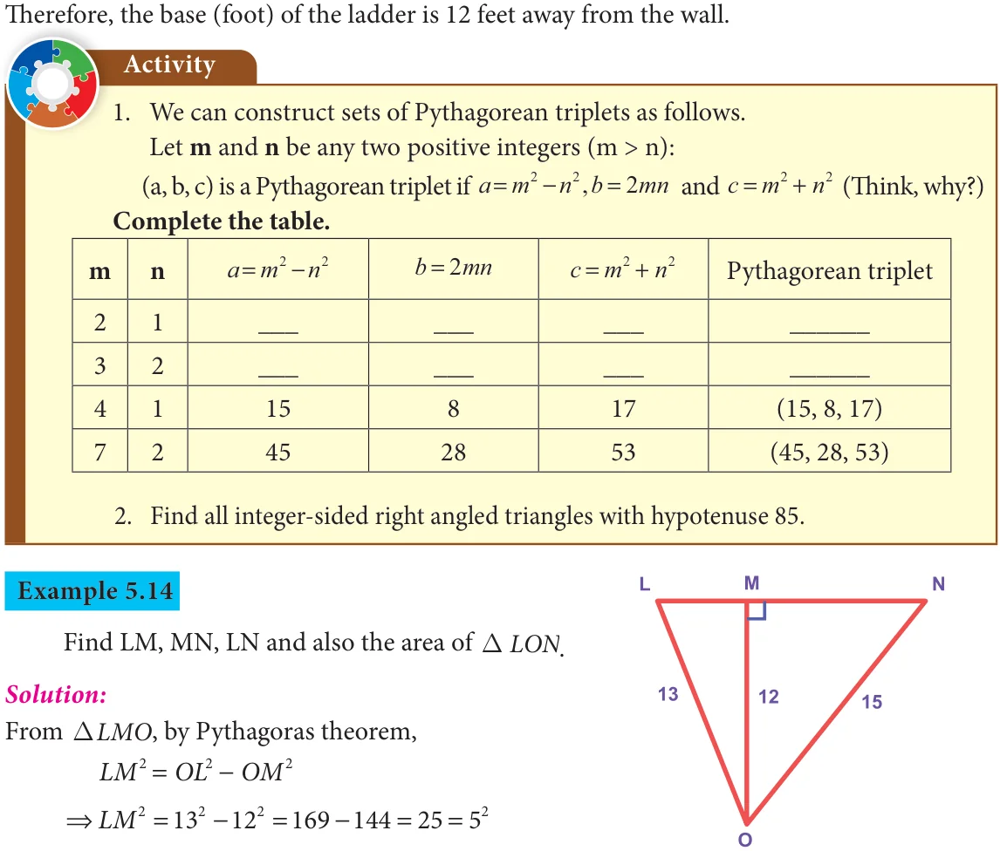
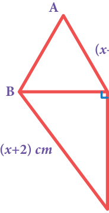

If in a triangle, the square of the greatest side is equal to the sum of squares on the other two sides, then the triangle is right angled triangle.

Example:
In the triangle ABC,
AB AC 11 60 3721 61 BC Hence, \(\triangle ABC\) is a right angled triangle.
Fig. 5.24
- There are special sets of numbers a, b and c that makes the Pythagorean relationship true and these sets of special numbers are called Pythagorean triplets. Example: (3, 4, 5) is a Pythagorean triplet.
- Let k be any positive integer greater than 1 and (a, b, c) be a Pythagorean triplet, then
(ka, kb, kc) is also a Pythagorean triplet. Examples: k (3,4,5) (5,12,13) 2k (6,8,10) (10,24,26) 3k (9,12,15) (15,36,39) 4k (12,16,20) (20,48,52) So, it is clear that we can have infinitely many Pythagorean triplets just by multiplying any Pythagorean triplet by k.
We shall now see a few examples on the use of Pythagoras theorem in problems.
Example 5.11

In the figure, \(AB \perp AC\)
- What type of \(\triangle\) is ABC?
- What are AB and AC of the DABC ?
- What is CB called as ?
- If \(AC = AB\) then, what is the measure of \(\angle B\) and \(\angle C\) ? Fig. 5.25
Solution:
- DABC is right angled as \(AB \perp AC\) at A.
- AB and AC are legs of DABC .
- CB is called as the hypotenuse.
- \(\angle B + \angle C = 90\) and equal angles are opposite to equal sides. Hence, \(\angle B = \angle C = \frac{90}{2} = 45\)
Example 5.12
Can a right triangle have sides that measure 5cm, 12cm and 13cm?
Solution:
Take \(a = 5\) , \(b =12\) and \(c =13\)
Now, \(a + b = 5 +12 = 25+144 =169 =13 = c\)
By the converse of Pythagoras theorem, the triangle with given measures is a right angled triangle.

Example 5.13
A 20-feet ladder leans against a wall at height of 16 feet from the ground. How far is the base of the ladder from the wall?
Solution:
The ladder, wall and the ground form a right triangle with the ladder as the hypotenuse. From the figure, by Pythagoras theorem, Fig. 5.26
\(= +\)
\(\Rightarrow = +\)
\(\Rightarrow = - = = \Rightarrow =12\) feet

\(\therefore =\) units Fig. 5.27
From DNMO, by Pythagoras theorem,
\(MN = ON - OM\)
\(=15 - 12 = 225 - 144 = 81= 9\)
\(\therefore MN = 9\) units
Hence, \(LN = LM + MN = 5+ 9 = 14\) units Area of \(\triangle LON = \times\) base \(\times\) height
\(\frac{1}{2} = \frac{1}{2} \times LN \times OM\)
\(= \frac{1}{2} \times 14 \times 12 = 84\) square units.
Example 5.15
\(\triangle ABC\) is equilateral and CD of the right triangle BCD is 8 cm. Find the side of the equilateral \(\triangle ABC\) and also BD.
Solution:

As \(\triangle ABC\) is equilateral from the figure, AB=BC=AC= (x \(- 2)\) cm. \(- 2) \therefore\) From DBCD, by Pythagoras theorem
\(BD = BC + CD\)
\(\Rightarrow\) (x \(+ 2) =\) (x \(- 2) + 8 _{(}\)
\(x + 4x + 4 = x - 4x + 4 + 8\)
\(\Rightarrow 8x = 8\)
Fig. 5.28
\(\Rightarrow x = 8cm\)
\(\therefore\) The side of the equilateral \(DABC = 6\) cm and \(BD =10\) cm.